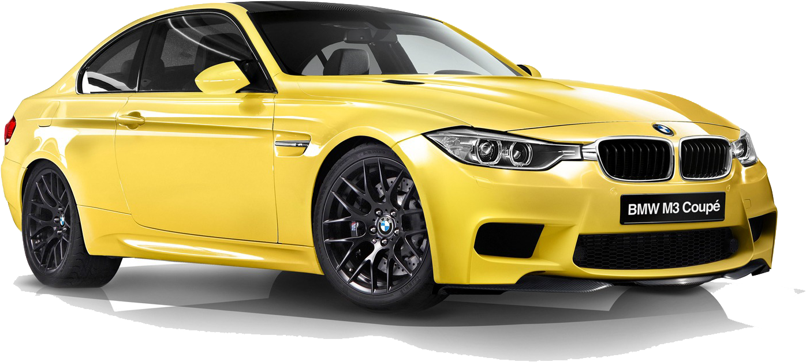

BMW M5
Rs. 1.99 Cr

BMW X1
Rs. 49.50 - 52.50 Lakh

BMW X7
Rs. 1.27 - 1.33 Cr
BMW X6
Rs. 1.25 - 1.30 Cr
BMW, short for Bayerische Motoren Werke AG, is a renowned German luxury automobile and motorcycle manufacturer headquartered in Munich, Bavaria. Established in 1916, BMW initially focused on producing aircraft engines before transitioning to automobiles and motorcycles. The brand is globally recognized for its innovation, engineering excellence, and commitment to delivering premium performance vehicles. With iconic models like the BMW 3 Series, 7 Series, and its M performance lineup, the company has carved a niche for itself in the luxury and sports car markets. BMW's dedication to sustainability is evident in its expanding electric and hybrid vehicle lineup, including the BMW i and BMW iPerformance series, shaping the future of mobility.
BMW is owned by the BMW Group (Bayerische Motoren Werke AG), which is a publicly traded company with shares listed on the Frankfurt Stock Exchange. Unlike some other automakers, BMW does not have a single individual owner; instead, it is primarily owned by shareholders, with the Quandt family being the largest stakeholders. The Quandt family has played a significant role in BMW's success over the decades. **Stefan Quandt**, born on May 9, 1966, and his sister **Susanne Klatten**, born on April 28, 1962, are the most prominent figures associated with BMW's ownership. They inherited their stakes in BMW from their father, Herbert Quandt, who is credited with saving the company from bankruptcy in the 1960s and steering it towards becoming a global luxury automotive leader. Stefan Quandt holds around 25% of the company, while Susanne Klatten owns approximately 20%. Together, they have a combined controlling interest in BMW, making them influential in its strategic decisions. Stefan Quandt is a German industrialist and engineer who also manages other investments through his holding company, AQTON. Susanne Klatten, Germany's richest woman and a trained economist, has diversified her portfolio with investments in the chemical and pharmaceutical industries through her company, SKion. Both siblings maintain a low public profile and are known for their discretion regarding personal life details. Despite their significant wealth, estimated in the billions, they have focused on maintaining BMW's reputation as a leader in innovation, quality, and sustainability within the automotive sector. BMW’s corporate structure ensures that the Quandts, despite their substantial stakes, work alongside other institutional and individual shareholders to guide the company's direction. The CEO and board of directors oversee day-to-day operations, ensuring the legacy of precision, performance, and luxury continues under the BMW brand.
Rs. 1.99 Cr
Rs. 49.50 - 52.50 Lakh
Rs. 1.27 - 1.33 Cr
Rs. 1.25 - 1.30 Cr
BMW (Bayerische Motoren Werke AG) is a leading manufacturer of premium automobiles and motorcycles, renowned for its dedication to precision engineering, advanced technology, and luxury design. Headquartered in Munich, Germany, BMW operates a global network of manufacturing facilities to cater to the diverse demands of its international customer base. With production plants located in Germany, the United States, China, India, South Africa, and other key regions, BMW ensures high-quality standards and seamless integration of innovative technologies in its vehicles. The manufacturing process at BMW is driven by cutting-edge technology, including robotics, artificial intelligence, and sustainable practices. Each vehicle is meticulously crafted with a focus on performance, safety, and comfort. BMW's state-of-the-art assembly lines emphasize precision, where highly skilled engineers and technicians collaborate with automated systems to produce iconic models like the BMW 3 Series, X5, and electric models such as the i4 and iX. Sustainability is a core value of BMW's manufacturing philosophy. The company invests heavily in renewable energy, recycling initiatives, and reducing CO2 emissions throughout its production process. For instance, its plant in Leipzig, Germany, is partially powered by wind turbines, reflecting BMW's commitment to eco-friendly practices. Additionally, BMW embraces digitalization and Industry 4.0 principles, integrating smart systems and real-time data to optimize efficiency and ensure the delivery of world-class vehicles. BMW's manufacturing excellence is a testament to its legacy of innovation and its vision for the future of mobility. Whether producing high-performance engines, luxurious interiors, or advanced electric drivetrains, BMW's facilities exemplify a harmonious blend of tradition and modernity in the automotive world.
BMW engines are a hallmark of the brand's commitment to engineering excellence, delivering a perfect blend of power, efficiency, and refinement. Known for their innovative design and cutting-edge technology, BMW engines are crafted to offer superior performance and an unparalleled driving experience. Whether it’s the iconic inline-six engines, powerful V8s, or the advanced plug-in hybrid and electric powertrains, each engine reflects BMW’s legacy of precision and innovation. BMW’s internal combustion engines feature technologies such as **TwinPower Turbo**, which enhances power delivery while improving fuel efficiency and reducing emissions. These engines are meticulously engineered to balance performance and sustainability, meeting stringent environmental standards without compromising driving dynamics. The company also integrates lightweight materials and variable valve timing systems, such as **Valvetronic** and **Double VANOS**, to optimize power output and responsiveness. For enthusiasts, BMW’s **M Performance** engines, like the S58 inline-six or the S63 V8, are benchmarks in the high-performance segment, offering exhilarating power and torque for track-ready performance. Meanwhile, BMW’s commitment to the future is evident in its electric motors and hybrid powertrains. The brand's **eDrive** technology combines electric motors with combustion engines for seamless integration, as seen in models like the BMW i8 and the latest i4. BMW engines are manufactured with the utmost precision in facilities such as the Steyr engine plant in Austria and the Hams Hall plant in the UK, ensuring global standards of quality and performance. Each engine is rigorously tested to guarantee reliability and durability, making BMW a trusted name for drivers who demand the best. Whether it’s a roaring gasoline engine, a torque-rich diesel, or a whisper-quiet electric motor, BMW’s powertrains are designed to deliver the ultimate driving pleasure.
BMW offers a comprehensive warranty program that reflects its commitment to quality, reliability, and customer satisfaction. Designed to provide peace of mind, the BMW warranty covers a wide range of repairs and services, ensuring that your vehicle performs at its best throughout the ownership period. The standard **BMW New Vehicle Limited Warranty** typically covers the vehicle for **4 years or 50,000 miles**, whichever comes first, protecting against defects in materials and workmanship. In addition to the basic warranty, BMW includes an industry-leading **3-year/36,000-mile complimentary maintenance program**, known as **BMW Ultimate Care**. This program covers essential services like oil changes, brake fluid replacements, and vehicle inspections, reducing the cost of ownership and maintaining your BMW’s performance. For electric and hybrid models, BMW provides an **8-year/100,000-mile warranty** on the high-voltage battery, ensuring long-term reliability and efficiency of the eDrive system. To further enhance coverage, BMW owners can opt for **Extended Service Contracts**, which provide additional years or miles of protection tailored to individual driving habits. BMW’s warranty also features **24/7 roadside assistance**, available for the duration of the warranty period, offering services like towing, jump-starts, and lockout assistance. With a network of authorized service centers and certified technicians, BMW ensures that all warranty repairs use genuine parts and adhere to the highest standards of craftsmanship. Whether it’s a sedan, SUV, or electric vehicle, BMW’s warranty program underscores its dedication to delivering not just exceptional vehicles but also an exceptional ownership experience.
BMW tires are an integral part of the brand’s focus on delivering the **Ultimate Driving Experience**, combining performance, safety, and comfort. Engineered to meet the precise specifications of each BMW model, these tires are crafted to enhance handling, grip, and overall driving dynamics. BMW partners with leading tire manufacturers such as Michelin, Pirelli, and Bridgestone to develop high-quality tires that are rigorously tested to ensure they match the performance standards of BMW vehicles. BMW offers a wide range of tire options, including **summer performance tires**, **all-season tires**, and **winter tires**, catering to diverse driving conditions and customer preferences. Many BMW vehicles come equipped with **run-flat tires**, which are designed to maintain stability and control even after a puncture, allowing the driver to continue driving for a limited distance to reach a service center. This feature eliminates the need for a spare tire and maximizes trunk space. To ensure optimal tire performance, BMW provides **Tire Pressure Monitoring Systems (TPMS)** in all its vehicles, alerting drivers to changes in tire pressure that could affect safety and fuel efficiency. For added convenience, BMW owners can benefit from the **BMW Road Hazard Tire Coverage**, which protects against unexpected tire damage caused by potholes, nails, or other road hazards. Regular tire maintenance, such as alignment, balancing, and seasonal tire changes, is crucial for maintaining BMW's signature driving precision. Authorized BMW service centers provide expert care and genuine replacement tires, ensuring that every BMW remains road-ready and performs at its peak under any conditions.
BMW interiors are a seamless blend of luxury, innovation, and functionality, designed to offer an unmatched driving experience. Every detail is meticulously crafted, from the premium materials used to the intuitive placement of controls, reflecting BMW’s commitment to quality and refinement. Whether it’s the supple leather upholstery, fine wood or metal trims, or ambient lighting, the interior of a BMW exudes sophistication and comfort. The centerpiece of the BMW interior is the advanced **iDrive infotainment system**, featuring a high-resolution touchscreen, rotary controller, and voice-activated controls. This system provides seamless access to navigation, media, and vehicle settings, ensuring that every journey is connected and effortless. BMW interiors also come equipped with cutting-edge technologies, such as **gesture controls**, **wireless charging**, and **head-up displays**, enhancing convenience and safety. Comfort is paramount, with ergonomically designed seats offering multiple adjustments, heating, cooling, and even massage functions in select models. Rear passengers also enjoy ample space and luxury, with features like reclining seats and climate control zones in higher-end BMW models. For audiophiles, the BMW interior can be upgraded with premium sound systems from Harman Kardon or Bowers & Wilkins, delivering immersive audio experiences. BMW interiors are also crafted with sustainability in mind, incorporating eco-friendly materials in models like the BMW i4 and iX, without compromising on elegance. Storage solutions, panoramic sunroofs, and customizable ambient lighting add to the versatility and ambiance, making every BMW cabin a sanctuary for drivers and passengers alike. Whether it’s a sporty sedan, a luxurious SUV, or an electric masterpiece, the interior of a BMW is where innovation meets indulgence.